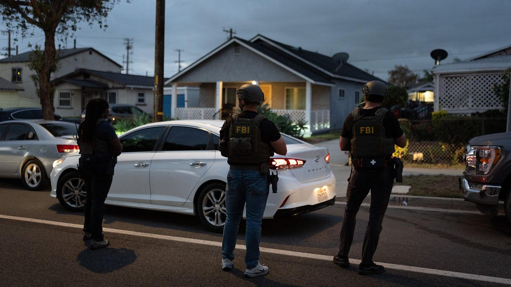
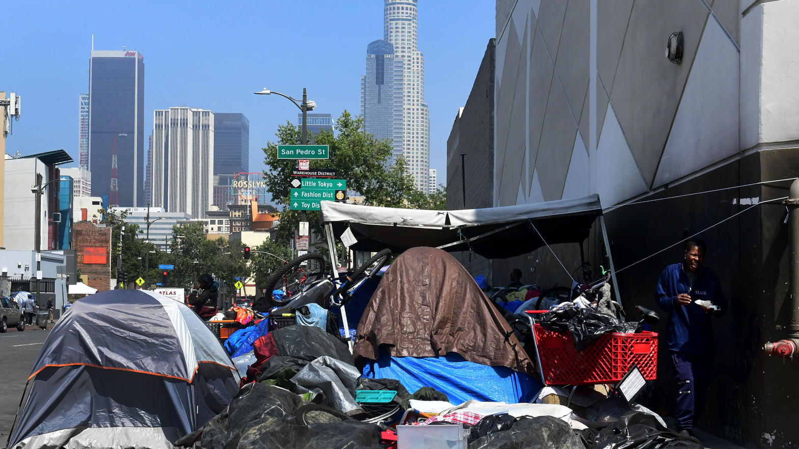
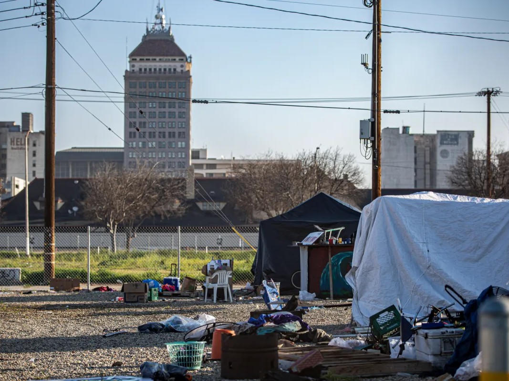

The exit
Sept. 9
Mayor Karen Bass left the LAHSA governing commission. LAist found she missed 13 of 21 meetings in a recent year. She has not been charged.
Los Angeles to Fresno County
Karen Bass left the LAHSA board. Federal agents then arrested nonprofit operators who drew tens of millions through that agency. The pattern is not a mayor. It is the plumbing. Fresno County now holds the same pipes.
The exit
Sept. 9
Mayor Karen Bass left the LAHSA governing commission. LAist found she missed 13 of 21 meetings in a recent year. She has not been charged.
The arrests
Sept. 16
Federal prosecutors charged operators tied to Home At Last, Special Service for Groups, and Big Blue Umbrella. LAHSA paid Home At Last more than $75 million.
The local stack
CA-514
Fresno City and County / Madera County Continuum of Care. HUD CoC award of $14.07 million in 2024. County now administers the coalition.
On September 9, 2026, Los Angeles Mayor Karen Bass stepped off the governing commission of the Los Angeles Homeless Services Authority. Her office called it a time problem. She is also running for re-election. A House subcommittee had asked her to appear the following week on federal homelessness spending. She did not testify that day.
Bass appointed herself to that board in 2023. LAist reviewed attendance and found she missed 13 of 21 meetings across a recent year, above the four-absence mark in LAHSA bylaws. Her three-year term expired June 30. She stayed on until the September exit. Federal prosecutors have not charged her and have not accused her of joining the alleged schemes described below. That distinction matters. Board presence is not a conviction. Board absence is still a control failure.
Seven days later, on September 16, the U.S. Attorney's Office for the Central District of California announced arrests and charges against people who worked the provider side of that same system.
Michael Young, 46, a founder of Culver City-based Home At Last, was arrested on a federal complaint alleging wire fraud. Prosecutors say the nonprofit took in more than $118 million in public funds from LAHSA, the city, the county, and HUD. LAHSA alone paid it more than $75 million for homeless housing services. The complaint alleges Young hid control of vendors through fake competing bids, forged signatures, and fraudulent invoices, then diverted millions into shell companies, commercial real estate, luxury travel, vintage cars, and more than $1 million toward Six Seven Five Lounge, a high-end restaurant and nightclub in Inglewood. Prosecutors put the misappropriation through fake contractors in the range of $7.5 million, with a broader alleged diversion above $12 million.
The same announcement named Lakiya Malone, 48, an employee of Special Service for Groups, arrested the same morning, and Donye Mitchell, 55, of Orange, chief executive of Big Blue Umbrella, charged with wire fraud and listed as a fugitive at the time of the announcement. A separate Southern California case earlier in 2026 charged Alexander Soofer, executive director of Abundant Blessings, with a $23 million homelessness-fund scheme. Prosecutors alleged at least $10 million was pocketed for a Westwood house, private school tuition, travel, and other luxury spending, while billed meals and rooms were not delivered as claimed.
LAHSA said it cooperated with investigators, terminated Home At Last contracts in June 2026 after evidence of wrongdoing, and that no LAHSA staff are implicated in the September charges. All defendants are presumed innocent unless proven guilty in court.
The agency itself was already under federal pressure. On June 11, 2026, HUD suspended LAHSA from receiving federal funds and cited a pattern of mismanagement: payments tied to motel rooms after people had exited, failure to document nearly 2,300 housing sites, late and inaccurate single-audit figures, and no written conflict-of-interest policy until September 26, 2025, despite prior certifications. Los Angeles County had already pulled more than $300 million out of LAHSA into a new county homelessness department. This week LAHSA voted not to keep applying for the region's federal Continuum of Care administrative roles, including the annual homeless count and more than $200 million in federal funds starting next month.

These cases are not identical. They rhyme. Across the public complaints, HUD letters, and earlier 2026 arrests, the same mechanical features keep showing up.

Fresno is not Los Angeles. The dollar figures are smaller. The legal form is the same family.
The Fresno City and County / Madera County Continuum of Care is HUD CoC CA-514. HUD's 2024 CoC award compilation lists a total of $14,073,967 for this continuum. Permanent housing takes most of it. Recipients on that award list include Elevate Community Services, Turning Point of Central California, Community Action Partnership of Madera County, Fresno County Economic Opportunities Commission, WestCare, Poverello House, and the housing authorities. Coordinated entry, HMIS, and a planning grant sit on top of the project list. That is the same HUD Continuum of Care machine LAHSA used as the regional applicant until this month.
State money stacks on the same providers. California's accountability dashboard records $77.7 million in Homeless Housing, Assistance, and Prevention awards to the Fresno area from 2019 through 2025, $32.4 million of it directly to Fresno County. As of that snapshot the county had obligated $31.3 million and spent $16.1 million. Encampment Resolution Funding in the area is listed at $33 million. In March 2026 the county announced another $10.1 million in HHAP-6 after supervisors placed the Continuum of Care under a new county Office of Housing Homelessness. Fresno Housing had been the manager. The county took the keys in late 2025 and promised better accountability.
Point-in-time counts remain noisy. HUD-verified 2025 numbers put Fresno and Madera at 4,905 people sheltered or unsheltered, up 9.2 percent from 2023. Preliminary 2026 figures using a changed method came in at 3,254. Officials themselves warned against treating that drop as a clean year-over-year win. Methodology changes are not housing placements.

None of that is an accusation that a Fresno nonprofit stole a dollar. It is a map of where a Los Angeles-style case would have to look if one ever formed.
Two local files already show why the map is not theoretical.
First, Fresno EOC. The agency is a CoC recipient. A 2026 Fresnoland account of a board forensic review described about $15 million in operating reserves consumed in a few years, hundreds of unpaid invoices in a single month, and executives bypassing budget controls with credit cards that ran as high as $200,000 a month. The forensic report, as presented to the board, found no evidence of abuse and still could not answer what the reserves were spent on. That combination, weak controls plus unexplained drawdown plus a role in homeless housing grants, is exactly the kind of paper HUD and IRS Criminal Investigation now read for a living. An unexplained reserve is not a nightclub. It is a reason to keep the ledger open.
Second, Poverello House and a failed tiny-home contract. In August 2026 the Fresno City Council voted to start litigation after a service agreement for about two dozen tiny homes was not delivered. Poverello House said a contractor went silent and that staff had been interviewed by the FBI about that contractor. Separate reporting described other Central Valley groups who say they were taken by the same builder. That is the inverse of the Home At Last allegation. In Los Angeles, prosecutors say the nonprofit was the siphon. In Fresno, a major provider says it was the customer of a bad vendor. Both versions travel through the same weak point: public homeless dollars, a construction or services subcontract, and a city that finds out after the delivery date has passed.

Predictions that name defendants are gossip. Predictions that name systems are homework. Congruent with the Los Angeles record, Fresno County should expect pressure on five points.
1. Document requests that ignore the city limits. The task force model in Los Angeles combined FBI, IRS Criminal Investigation, HUD Office of Inspector General, and the U.S. Attorney. Once that machine is warm, it does not stop at the county line of the first indictment. Any CoC that certified conflict-of-interest controls, occupancy, and HMIS completeness is now a file, not a slogan. CA-514 should assume it will be asked to produce vendor lists, related-party schedules, and bed-night support the way LAHSA was asked.
2. Occupancy tests, not press conferences. HUD's specific complaint in Los Angeles was empty rooms and unverified sites. The matching local question is simple. For every PSH, RRH, triage, and tiny-home unit billed to HUD, HHAP, ESG, or ERF, can the County Office of Housing Homelessness show a name, a date, and a door? If the answer is a dashboard instead of a roster, that is the LAHSA problem at Valley scale.
3. Related-party and vendor graphs. The Home At Last complaint is a picture of one founder standing behind several "competing" companies. The local analog is not a rumor about a person. It is a public request: every subcontract over a set dollar mark, beneficial owners, shared addresses, shared officers, and shared bank accounts. County counsel can do that without a federal case number. Waiting for one is how Inglewood got a nightclub on a housing invoice.
4. Transition years get extra scrutiny. The county took FMCoC administration from Fresno Housing in late 2025. New offices, new staff of roughly half a dozen, old providers, and state grants arriving on a short clock are the classic window for invoice drift. Supervisors sold the change as accountability. That only holds if the first year produces contract files a stranger can audit.
5. Policy weather from Washington will hit the same stack. HUD already used LAHSA as the national exhibit. Housing First is no longer an uncontested federal default. State HHAP is also tighter. Mayor Jerry Dyer said in June that local partners will have to replace dwindling outside money. When the faucet slows, two things happen at once. Honest programs shrink. Dishonest invoices get easier to see, because there is less volume to hide them in. Fresno should want the second effect before someone else schedules it.
What should not be in store is a copy-paste morality play. Bass leaving a board is not proof she stole housing money. An EOC reserve collapse is not a federal complaint. A tiny-home lawsuit is not a wire-fraud count. Treating every nonprofit as a suspect is how outreach dies. Treating every large contract as self-executing is how nightclubs get built.
The High Tower District version of the lesson is narrower. Watch the second hop. Watch the board that never reads it. Watch the bed that exists on a spreadsheet and not on a block. Los Angeles just spent years and more than a billion dollars teaching that class out loud. Fresno County is seated in the same room, with a smaller textbook and the same exam.
Publish the FMCoC and county HHAP vendor table: prime recipient, subcontractors, amounts, and officers.
Require related-party affidavits on every contract above a public threshold, and post the exceptions.
Match billed bed-nights to HMIS exits every quarter, in public, including empty motel and vacant-unit counts.
Keep the new Office of Housing Homelessness meeting packets online with contract amendments attached, not summarized.
If a provider says a contractor vanished with public money, name the contractor in the packet and say whether the FBI interview produced a case number.
All criminal defendants named in this story are presumed innocent unless proven guilty in court. Board service, grant receipt, and an audit finding are not the same thing as a charge.